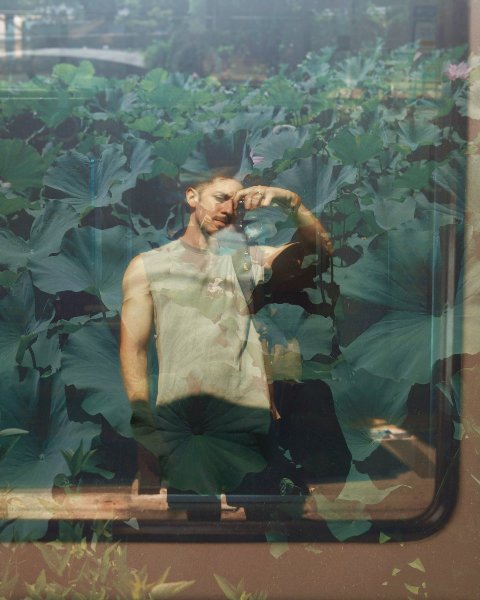

About Me

Photographer and designer, based in Southeast Asia. For years I taught literature abroad, where I built CROW, a four-stage framework that takes a reader from first observation to a reading they can defend. I designed the curricula it lived inside and the campaigns that carried it. Photography, a syllabus, a sentence. It's one instinct in different rooms: decide what to leave out, then build something that moves the person on the other end.